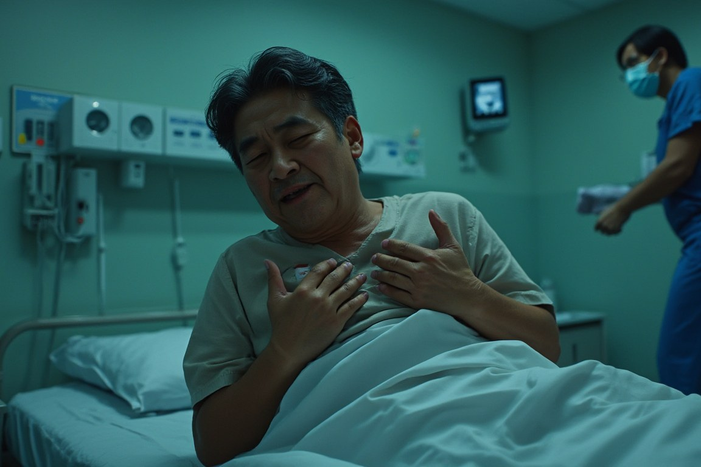
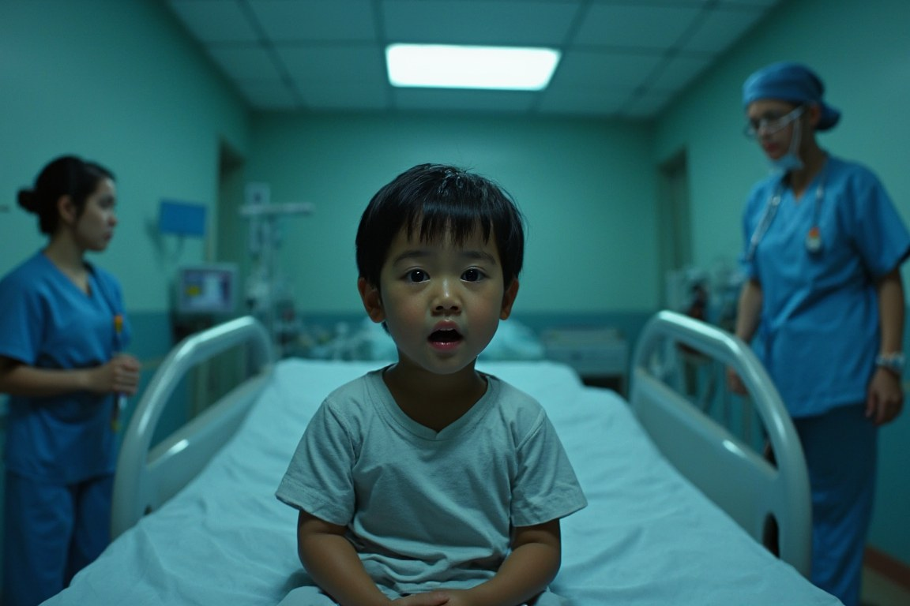
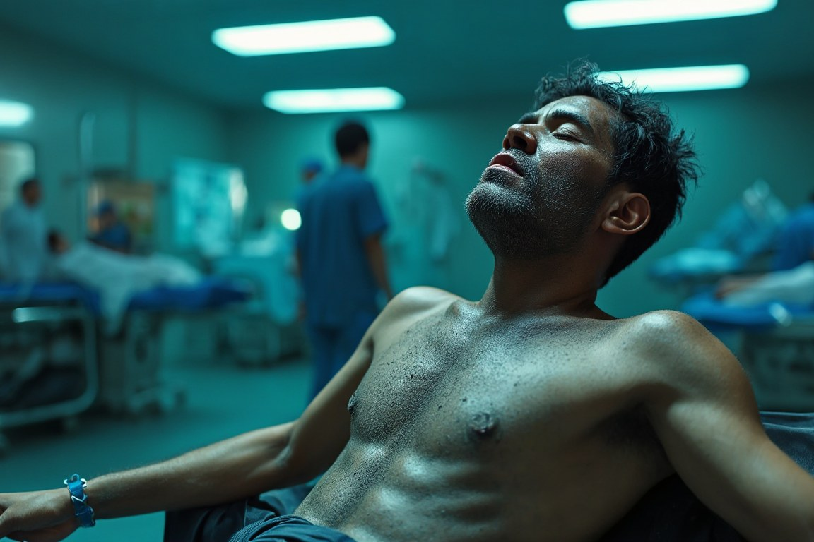

Free because the people who need a result they can verify are the ones who pay for it — never the learner.
Ask them what happened. Examine them. Order the tests, give the drug you think they need — and the monitor beside the bed tells you, second by second, whether you were right.
EP1 · The Last Bite · waiting
Ing · F 19
Ten minutes after the wrong salad, and her throat is closing.
You will probably lose her the first time. Almost everyone does — then you run it back. Nobody sees it but you.
Students from 18 of Thailand's 29 medical faculties already train on the engine underneath this.
Anyone can play. Nobody can fake the replay. A deterministic physiology engine decides whether they live, and every run reduces to one hash anchored on Solana — so anyone can replay the tape and get the same answer, without asking us.
They answer in their own words. They can be wrong, and they can be too breathless to answer.
Orders, drugs, airway, fluids — a live bedside monitor moves the way the physiology moves.
No script. A deterministic clinical automaton decides in real time, from what you did and when.
Every case reduces to one hash. Replay the tape, get the same answer — no trust required.
Four of the cases on the shelf today. Same engine, same clock — the patient is what changes.



Stated plainly, so you can check us. The demo you can play today is the green tier. The star gate — OSCE stations that unlock the next chapter — is what we are wiring now.
A market for skill that can be verified.
Our mission: one per cent more doctors who actually reach patients, every year. Counted as newly licensed — a student who never passes their licensing examination never reaches a patient, and that loss is what we shrink: one per cent of a graduating class is roughly one in six of the students who today leave because the work was too hard.
9.1% of medical students never finish, and the single largest cause is academic difficulty; others finish but never pass the board. We find the learner who is going to fail before they fail and route them to the practice that closes their specific gap — then make the evidence of that practice something a residency in another country can trust without trusting us, or the school that produced it.
RUST · SOLANA · AGPL-3.0 — engine, program and client, open end to end
Progression is recomputed on-chain from Merkle proofs. Claim a level you didn't earn and the program rejects it — no issuer key, no oracle.
A residency programme in another country can verify a record without trusting us or the school that produced it.
Money given for a scenario can only fund that scenario — enforced by the program, released against the delivered content hash.
Stated before anyone asks: 40 of 100 rubric points are re-derivable; 60 are attested by named judges. We cannot prove who sat at the keyboard — identity binding belongs to the credential issuer. And we do not grant standing: only a medical board can make competence authoritative.
CEO & AI architect — engine and chain, Rust end to end
Co-founding physician — clinical accuracy, OSCE rubrics, safety gates
Co-founder & COO — registered nurse; hospital operations
…with Pongsakorn Jaikaew (AI engineering) and Napaphach W. (QA). Bangkok, Thailand.